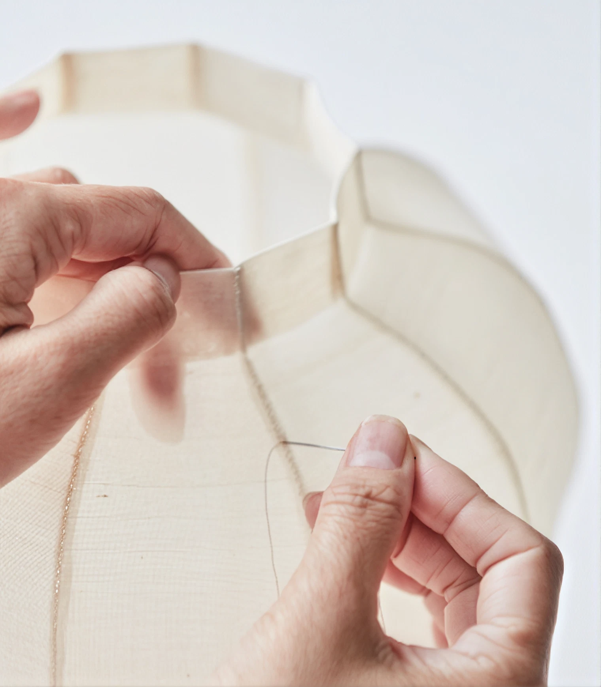

Projects 6
A Moon Jar Shaped by Needle and Thread
We spent a special time exploring the aesthetics of traditional Korean jogakbo (patchwork) with fiber artist Ye-jin Shin (Artbo)—who reinterprets the sensibilities of traditional fabrics through modern patchwork and art objects—and crafting our own unique mosi (ramie) moon jar vase, stitch by painstaking stitch.
We also enjoyed a meaningful session reflecting on the value of tradition through a lecture on jogakbo art by Moon Ji-yoon, CEO of Bureau de Claudia, discovering the Korean aesthetics and philosophy of life embodied in a single piece of fabric.
